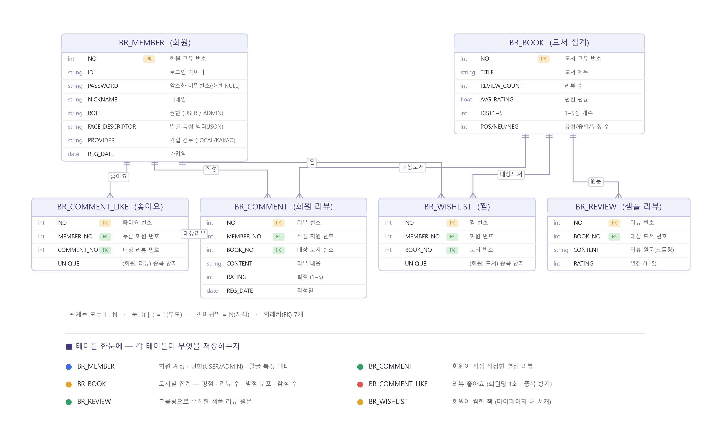

BookReview — 독자 리뷰 기반 도서 탐색 플랫폼
Spring MVC 기말 프로젝트 보고서 · kr.ac.kopo · 2026 · v1.0
"독자가 남긴 실제 리뷰"로 책을 고르는 도서 리뷰 · 탐색 플랫폼
1. 프로젝트 개요
알라딘 도서 리뷰 크롤링 데이터(도서 200종 · 리뷰 4,000건)를 정제해 Oracle에 적재하고,
도서 검색 · 평점/리뷰 순위 · 상세 통계(평점 분포 · 감성 분석)를 제공하는 Spring MVC 웹 애플리케이션이다.
얼굴 인식 로그인과 카카오 로그인까지 지원한다.
무엇을 하는 사이트인가
- 독자 리뷰를 모아 책의 평점 · 별점 분포 · 감성(긍정/중립/부정)을 한눈에 보여준다.
- 제목 검색 · 평점 순위 · 리뷰 순위로 원하는 책을 빠르게 탐색한다.
- 로그인 후 별점 리뷰 작성 · 좋아요 · 찜(내 서재) 등 회원 활동을 지원한다.
- 각 도서를 예스24 · 알라딘 · 교보문고 검색으로 연결해 실시간 가격을 확인한다.
핵심 수치
| 200 | 4,000 | 6 | 3 |
| 도서 | 샘플 리뷰 | DB 테이블 | 로그인 방식 |
2. 기술 스택
| 구분 | 기술 |
|---|
| Language | Java 17 |
| Framework | Spring Web MVC 6.2 |
| Persistence | MyBatis 3.5 + mybatis-spring |
| Database | Oracle XE 21c (ojdbc11 / commons-dbcp 커넥션 풀) |
| View | JSP / JSTL (Jakarta) · 자체 CSS 디자인 시스템 |
| AI / 인증 | 딥러닝 얼굴 인식(face-api.js) · 카카오 OAuth 2.0 |
| Build / WAS | Maven (war) · Apache Tomcat 11 |
3. 시스템 아키텍처
표준 레이어드 아키텍처로, 요청은 DispatcherServlet을 통해 계층을 따라 흐른다.
브라우저(JSP) → DispatcherServlet(요청 배분) → Controller(요청/응답) →
Service(핵심 로직) → DAO + Mapper(SQL 실행) → Oracle(데이터 저장)
- 요청 흐름 : 브라우저 요청 → DispatcherServlet이 알맞은 Controller로 전달 → Service 로직 → DAO · Mapper가 SQL 실행 → Oracle 응답
- 패키지 : kr.ac.kopo.{main · book · member · member.social · comment · wishlist} × (controller · service · dao · vo)
- 인코딩 : CharacterEncodingFilter(UTF-8) 전역 적용
4. 데이터베이스 설계
테이블 6개 · 외래키(FK) 7개 · 모든 관계는 1:N(부모→자식). 회원 탈퇴 시 관련 데이터는 ON DELETE CASCADE로 함께 삭제된다.
기본 테이블
| 테이블 | 설명 | 주요 컬럼 |
|---|
| BR_MEMBER | 회원 | NO(PK), ID, PASSWORD, NICKNAME, ROLE, REG_DATE, FACE_DESCRIPTOR, PROVIDER/PROVIDER_ID |
| BR_BOOK | 도서 집계 | NO(PK), TITLE, REVIEW_COUNT, AVG_RATING, DIST1~5, POS/NEU/NEG_COUNT |
| BR_REVIEW | 샘플 리뷰(크롤링) | NO(PK), BOOK_NO(FK→BR_BOOK), CONTENT, RATING |
확장 테이블 (회원 활동)
| 테이블 | 설명 | 주요 컬럼 |
|---|
| BR_COMMENT | 회원 리뷰 | NO(PK), MEMBER_NO(FK), BOOK_NO(FK), CONTENT, RATING(1~5), REG_DATE |
| BR_COMMENT_LIKE | 리뷰 좋아요 | NO(PK), MEMBER_NO(FK), COMMENT_NO(FK), UNIQUE(회원,리뷰) |
| BR_WISHLIST | 찜 | NO(PK), MEMBER_NO(FK), BOOK_NO(FK), UNIQUE(회원,도서) |
FACE_DESCRIPTOR = 128차원 얼굴 특징 벡터를 JSON 문자열로 저장 · UNIQUE 제약으로 중복 좋아요/찜 방지
ERD (전체 관계도)

5. 주요 기능
| 기능 | 설명 |
|---|
| 도서 검색 | 제목 일부로 검색, 리뷰 많은 순 최대 50건 |
| 평점 순위 | 리뷰 N개 이상 기준 평점 평균 TOP 100 (높은순/낮은순 정렬) |
| 리뷰 순위 | 리뷰 수 기준 인기 도서 TOP 100 |
| 도서 상세 | 평점 분포 · 감성 비율 · 샘플 리뷰 |
| 회원 / 로그인 | 가입 검증 · 세션 인증 · 중복 검사 |
| 얼굴 로그인 | 카메라로 즉시 로그인 (거리 매칭) |
회원 기능 확장
- 카카오 로그인 : OAuth2 인가코드, 최초 시 자동 가입
- 별점 리뷰 : 1~5점 + 본문, 독자 리뷰에 통합 표시
- 리뷰 좋아요 : 토글 · 좋아요 수, 도움된 리뷰 표시
- 찜하기 : 보고 싶은 책 저장, 마이페이지 내 서재
- 마이페이지 : 내 리뷰 · 좋아요 · 찜 · 회원 탈퇴
Spring Security 없이 세션 기반 인증으로 구현 · JDK HttpClient로 카카오 OAuth 직접 연동
6. 사용자 권한별 기능
세션 기반 인증 · ROLE 컬럼으로 일반 회원과 관리자(ADMIN)를 구분한다.
| 권한 | 제공 기능 |
|---|
| 비회원 (Guest) | 도서 검색 · 평점/리뷰 순위 · 도서 상세 열람만 (읽기 전용, 리뷰·찜·좋아요 불가) |
| 회원 (User) | 가입/로그인 · 얼굴/카카오 로그인 · 별점 리뷰 작성·삭제 · 좋아요 · 찜 · 마이페이지 |
| 관리자 (Admin) | 대시보드(회원 수·도서 수) · 전체 회원 목록 · 도서 표지 이미지 관리 (ROLE=ADMIN만 /admin 접근) |
7. 로그인 — 3가지 방식
| 방식 | 구분 | 설명 |
|---|
| 아이디 · 비밀번호 | 기본 로그인 | 입력값 검증 · 세션(HttpSession) 인증 · 로그아웃/탈퇴 |
| 카카오 로그인 | OAuth 2.0 | 인가코드 방식 · 최초 로그인 시 자동 회원가입 · 비밀번호 없이 소셜 인증 |
| 얼굴 인식 로그인 | 딥러닝(face-api.js) | 128차원 얼굴 특징 추출 · 유클리드 거리(임계값 0.5)로 본인 확인 |
8. 평점 분포 & 감성 분석
리뷰 평점(1~5)을 기준으로 감성을 단순·명확하게 3분류하여 도서 상세에서 막대로 시각화한다.
| 감성 | 기준 평점 |
|---|
| 긍정 | 4 ~ 5점 |
| 중립 | 3점 |
| 부정 | 1 ~ 2점 |
예시 — 데미안(평균 4.63★) : 5★ 419 · 4★ 102 · 3★ 20 · 2★ 12 · 1★ 8 → 긍정 92% · 중립 4% · 부정 4%
9. 핵심 기술 — 얼굴 인식 로그인
얼굴 인식은 브라우저(face-api.js)에서 수행하고, 서버는 특징 벡터 저장·조회만 담당한다.
- 얼굴 감지 : face-api.js가 카메라 프레임에서 얼굴 검출
- 특징 추출 : 128차원 descriptor 벡터 생성
- 거리 비교 : 등록된 전 회원과 유클리드 거리 계산
- 인증 : 최소 거리 ≤ 0.5 → 해당 회원 자동 로그인
모델 : ssdMobilenetv1 + faceLandmark68Net + faceRecognitionNet · 임계값 THRESHOLD = 0.5
10. 개발 중 해결한 문제 (트러블슈팅)
| 문제 | 증상 | 해결 |
|---|
| @RequestParam 이름 누락 | IllegalArgumentException ('-parameters') | 어노테이션에 name 명시 → @RequestParam(name="min") |
| WTP 배포 누락 | 컴파일 클래스가 wtpwebapps에 0개 배포 | target/classes 동기화 + 서버 Clean 재배포 |
| SQL '&' 치환변수 오류 | 리뷰 내 & 기호를 변수로 오인해 입력 멈춤 | 스크립트 상단 SET DEFINE OFF 추가 |
| 제목 링크 깨짐 | '+'·공백·괄호가 URL에서 변형 → 상세 404 | <c:url> + <c:param>으로 URL 인코딩 |
11. 구현한 기능 · 아쉬운 점
구현 완료 (한 것)
- 도서 검색 · 평점/리뷰 순위 · 도서 상세
- 평점 분포 + 감성(긍정/중립/부정) 시각화
- 회원가입 · 세션 로그인 · 카카오 OAuth
- face-api.js 얼굴 등록 · 얼굴 로그인
- 별점 리뷰 · 좋아요 · 찜 · 마이페이지
- 관리자 대시보드 · 회원관리 · 표지관리
- ON DELETE CASCADE 회원 데이터 정리
미구현 · 아쉬운 점 (못한 것)
- 관리자 기능 한정 — 회원 강제탈퇴 · 리뷰 신고/삭제 없음
- 실시간 크롤링 파이프라인 미연동 (정적 데이터)
- 감성 분석이 별점 규칙 기반 (NLP 모델 아님)
- 검색 페이징 · 자동완성 미구현
- 도서 표지 일부 누락 · 이미지 업로드 미지원
- 모바일 반응형 최적화 부족
12. 향후 계획 (로드맵)
★ 1순위 — 브라우저에서 하던 얼굴 인식을 독립 Python 서버(FastAPI)로 분리 → 서버 측 얼굴 인증으로 보안·확장성 개선
- 보안 · 아키텍처 : 얼굴인식 FastAPI 서버 분리, 서버 측 얼굴 인증
- 기능 확장 : 관리자 도서 CRUD(추가·삭제), 도서 표지 이미지 업로드, 검색 페이징 · 자동완성
- 감성 고도화 : NLP 모델 기반 감성 분류
13. 결론
Spring MVC · MyBatis · Oracle 3계층 구조로 도서 리뷰 분석 플랫폼을 구현하고,
브라우저 딥러닝(face-api.js)을 접목해 얼굴 인식 로그인까지 완성했다.
향후 얼굴인식 서버 분리, 데이터 확장(실시간 크롤링), 감성 분석 고도화(NLP)를 과제로 남긴다.
— BookReview · kr.ac.kopo · 2026 —